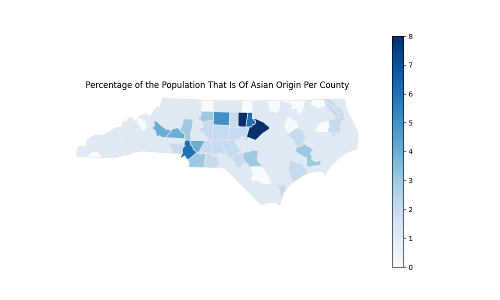
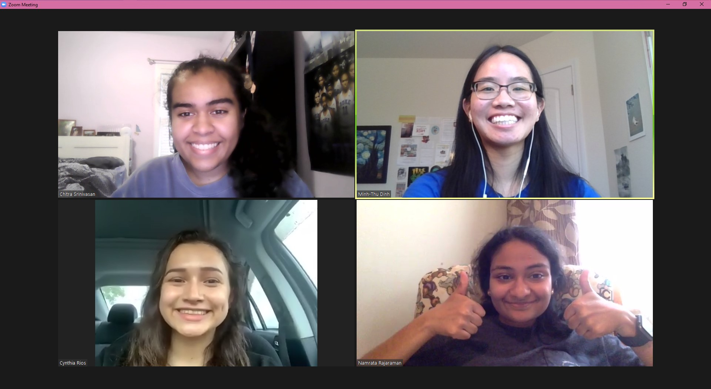
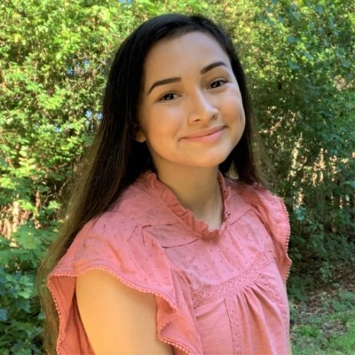
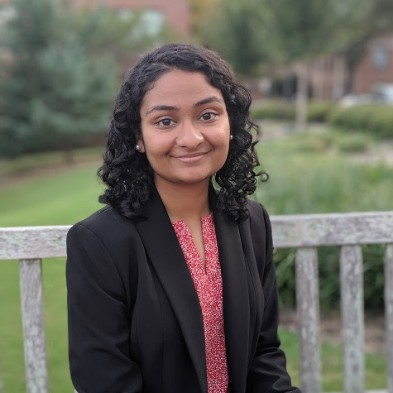

AAPI stands for Asian-American and Pacific Islanders
"cùng nhau" is the Vietnamese word for together. In a time of heightened violence for AAPI individuals,
it is imperative that we come together as a community to learn about AAPI
history and speak out against AAPI racism.

This website provides resources for educating and uplifting
the North Carolina AAPI community, after ongoing targeted
violence and AAPI racism throughout the COVID-19 pandemic.
With a particular focus on North Carolina folks, we wanted
to provide an accessible website with useful information and
direct action that focuses on solidarity and love towards our
communities.
cúng nhau is a DiamondHacks NCSU (hackathon) project
made by four women of color: Minh-Thu Dinh, Namrata Rajaraman, Cynthia Rios, and Chitra Srinivasan. We hope you utilize the resources and enjoy the website!

Member Biographies
Minh-Thu-Dinh is a second-year electrical engineering student at NC State University, with a minor in theatre.
She is passionate about Asian American solidarity and political activism. She previously interned at two politically-focused Asian American non-profits and collaborated with the Asian American community in her area.
She's currently working with the Sunrise Movement Charlotte hub, a youth movement dedicated to uplifting BIPOC communities for climate change political action, on processing data and communications.
Cynthia Rios is pursuing a double major in Electrical Engineering and Computer Engineering and a minor in Economics at North Carolina State University.
In her free time, she volunteers in her community to promote STEM education for underrepresented groups with the help of organizations including The Peruvian Coalition of NC, the North Carolina Society of Hispanic Professionals, El Pueblo, Uniting NC, and more.

Namrata Rajaraman is a sophomore at North Carolina State University studying Computer Engineering and Economics. She is interested in hardware development, medical devices, fintech, economic development, data science, and the intersection of technology and social impact!

Chitra Srinivasan is a sophomore in the College of Engineering at NC State University, pursuing a BS in Computer Science with a cybersecurity concentration and a minor in business administration. She is passionate about exploring the intersections between business and technology and am interested in learning more about topics relating to fintech, software engineering, data analytics, machine learning, artificial intelligence and cyber security.
She is passionate about promoting STEM education and about uplifting the voices for other fellow members of the BIPOC community!